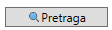
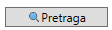

Uvod i osnovne informacije aplikaciji
Tipovi spomenika
Etikete
Spomenici
Mapa
Spomenici i rad sa njima
Spomenik predstavlja neki konkretan spomenik prirode koji dodaje korisnik. Svaki spomenik može biti opisan po sledećim osobinama:
- Oznaka - specificira je korisnik i mora biti uneta, mora imati najmanje 3 karaktera i mora biti jedinstvena
- Ime - obavezan parametar koji mora biti uneti i imati najmanje 3 karaktera, ne mogu postojati 2 spomenika sa istim imenom
- Opis - opciono se unosi i predstavlja neke dodatne značajne karakteristike spomenika
- Tip - bira se iz ranije dodatih tipova koje je dodao korisnik, mora biti izabran
- Klima - neobavezna, bira se jedna od predefinisanih: polarna, kontinentalna, umereno-kontinentalna, pustinjska, suptropska, i tropska
- Ikonica - mora postojati, ako je ne izabare korisnik automatski joj se dodaje ikonica njenog tipa
- Ekološka ugroženost - u vidi polja za štikliranje
- Stanište ugroženih vrsta - da li u regionu spomenika postoje ugrožene vrste, popunjava se polje za štikliranje
- U naseljenom regionu - da li se spomenik prirode nalazi u blizinu ljudske postojbine, polje za štikliranje
- Turistički status - opcion, bira se jedna od ponuđenih vrednosti: eksploatisan, dostupan, nedostupan
- Prihod - obavezan parametar, ako se ne unese podrazumevani je da je 0, vrednost mu je u dolarima
- Datum otkrivanja- obavezan parametar koji se bira iz kalendara. Ukoliko nije izabran biće izabran podrazumevani datum i to današnji dan
Spomenici se taguju etiketama prebacivanjem iz liste slobodnih u listu tagovanih i moguće je videti sve dostupne etikete prilikom
dodavanja ili izmene spomenika. Svaki spomenik može imati proizvoljno mnogo etiketa, i svaka etiketa se može dodeliti proizvoljno mnogo spomenika.
Prikaz spomenika
Pritiskom na dugme Spomenici u meniju moguće je videti tabelarni prikaz svih dodatih spomenika, i njihovo sortiranje po unetim parametrima.
Takođe iz ovog prozora je omogućeno i dodavanje novih spomenika na dugme  ,
brisanje na dugme
,
brisanje na dugme  i izmena
i izmena  postojećih spomenika. Omogućena je i pretraga
 i filtracija
po atributima u tabeli spomenika.
Za filtraciju je potrebno čekirati atribut po kome se želi filtrirati
i u tekstualno polje ispod napisati željeni sadržaj.
postojećih spomenika. Omogućena je i pretraga
 i filtracija
po atributima u tabeli spomenika.
Za filtraciju je potrebno čekirati atribut po kome se želi filtrirati
i u tekstualno polje ispod napisati željeni sadržaj.